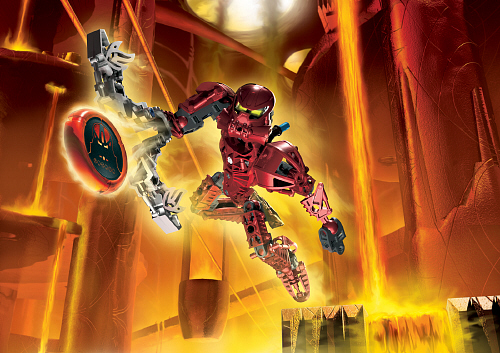
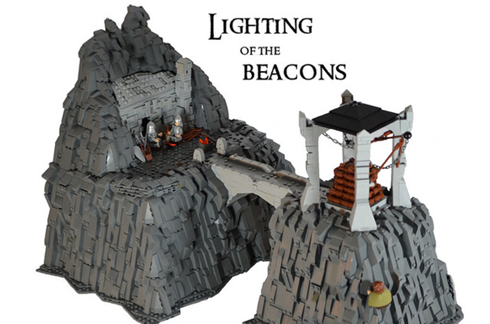
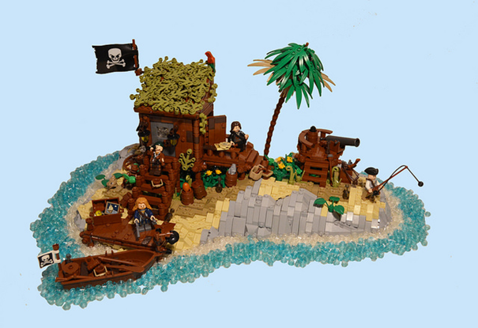
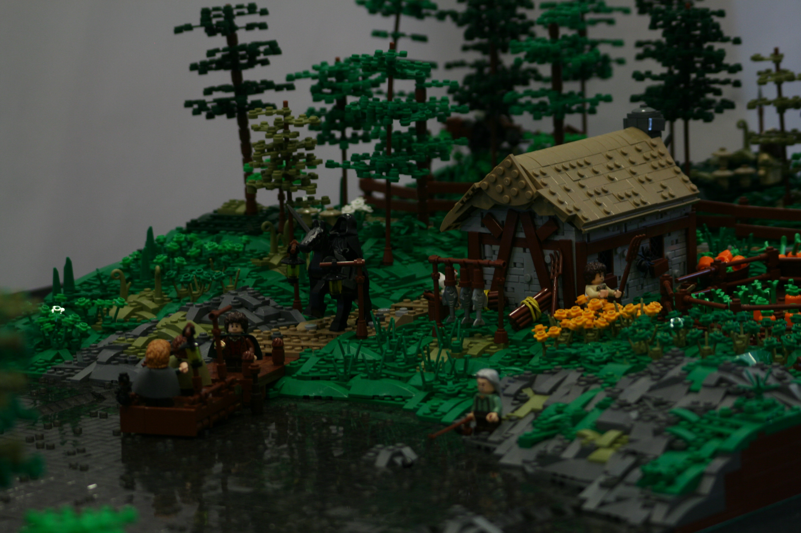
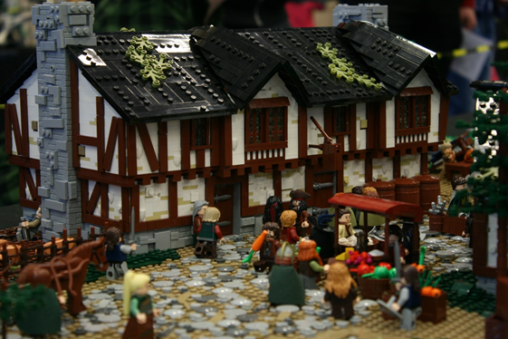
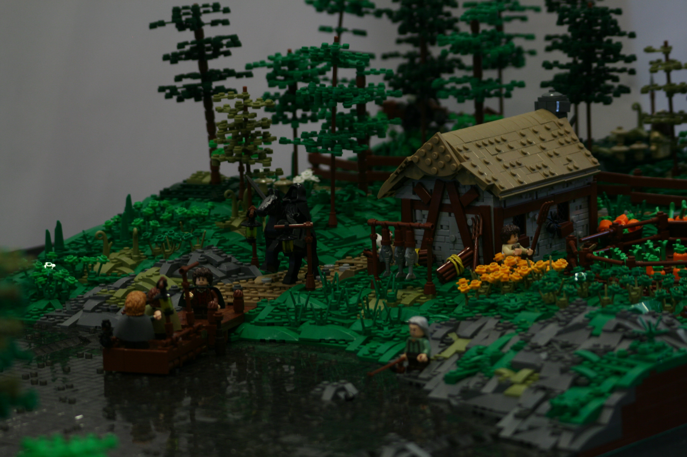
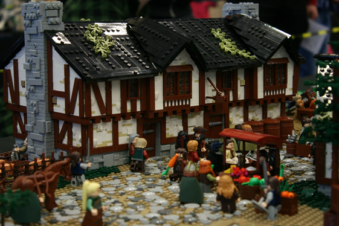

Interview with norlego
The second episode in the RebelLUG Interview series
09/30/18
1. First of all, who are you and what social media platforms are you found on?
Hey, my name is Olav. As I’m writing this I’m 18 years old, just about a month away from my 19th birthday. I’m a Norwegian AFOL that goes by the username of norlego across all the social media platforms I’m on. Those are instagram, flickr, twitter, youtube and various other LEGO forums, like eurobricks.
2. Which social media platform is your favorite, or which one do you prefer to visit, and what content do you like to browse and/or produce on each?
My favourite social media platform is definitely instagram, because I can not easily share my creations with a large and broad audience, I can also easily chat with others and interact with my followers and the instagram LEGO community. The people I follow and have known the longest in the community are also most active there. Therefore instagram has grown to become my main platform, and always where I share my creations and photographs first. It’s also a great place to browse memes, unlike Flickr, which is more limited. I like that a lot too, but it’s mainly to share photos. The content on flickr is also more fitting for me as a castle builder, rather than on instagram, where I’m mostly involved in the SW part of the community. Flickr is more clean in terms of spam posting compared to instagram, so thats why I prefer it when I wanna look for cool MOCs. The general MOC-quality is also better on Flickr.
3. How long have you been building with LEGO, and how long have you been involved in the LEGO community? Where and when did you start posting online?
I have been building with LEGO pretty much all my life. To this date I remember the first set I got for myself, which was the Bionicle: Toa Metru Vakama, 8601, which was released in 2004. I was really into bionicle when I was younger. Since then I have gotten, been buying and building LEGO for almost every year. The following years I found an interest in Harry Potter, Pirates of the Caribbean, LOTR, Star Wars, City, Batman and various other themes, which had a huge influence on what I’m building now. The two years leading up to my return to LEGO were the years I was least interested, but when Star Wars: The Force Awakens my interest also woke up. I started building some of my brother’s old SW sets from around 2005, and I was also introduced to the TFOL community on Youtube where I watched MOC videos and showcases from the original RebelLUG members, and other youtubers. That really got me going, and I was building MOCs for about 5-6 months before I actually joined the community around the summer of 2016, when I made my instagram user. It’s one of the best things I’ve decided because I’ve made some good friends, gotten to know and meet a lot of cool people. It has also encouraged me to start travelling to conventions in various countries around the world to meet these awesome people and display my creations. You’ll see me in Munich in November, and Chicago next summer.
4. Where do you draw inspiration? Are there any certain builders or MOCs that inspire you? Or do you get inspired outside of LEGO?
It’s no secret that I draw my inspiration from LOTR. I have found a huge interest in recreating scenes, places or anything from the LOTR trilogy. It’s my favourite movies of all time, so it’s difficult to not get inspired by it whenever I watch it. Dunedain98 was one of my main inspirations when it comes to LOTR MOCs, and his stuff got me interested in building that theme. When it comes to drawing inspiration from the LEGO community I look mostly to Flickr, where there’s a lot of castle builders. So being a castle builder, it’s hard not to get inspired when I see huge castles, great terrain, or detailed houses by builders like Jonatan Svenning, jaapxaap or William Navarre. Those are obviously only a select few of the names I can mention, but I recommend checking out their stuff on Flickr. I love nature, so that’s definitely a source of inspiration, and one of the reasons why I prefer to build all sorts of terrain as opposed to vehicles, ships or buildings. Medieval history and architecture is also something that interests me. So I’d say that there’s more non-LEGO related things that inspires me rather than LEGO MOCs, or other builders.
5. What's your favorite theme or subject to build in? Why do you find it so appealing?
LOTR. Easily, like I mentioned in the last question. I have a fascination and love for fantasy and adventure movies, and I have pretty much for my entire life. Therefore I also like themes like Pirates of the Caribbean, Orient Expedition, Indiana Jones, Adventurers, classic castle and classic pirates. These are my favourite LEGO themes, and although I haven’t built something from all of these themes, I want and hope to do that eventually. At the moment I have a lot of stuff I wanna build from LOTR, so that’s priority numero uno. As a RebelLUG member you might be surprised to see me not mention Star Wars right away, because I’ve unfortunately kind of lost interest in building Star Wars MOCs. I still have a few project ideas, but I’ve just never gotten to it because there’s stuff I wanna build instead, from other themes. I haven’t completely moved from it, you’ll still see me build SW every now and then. It was the theme that got me back into LEGO, and I still like Star Wars, without a doubt.
 6. What is your favorite hobby or social activity outside of building? How do you spend your time outside of the LEGO realm?
I’m a sports guy so I like watching and playing sports. Up until fall of 2017 I had played football (what americans call soccer for some reason) for about 11-12 years, so that’s always been a big part of my life. I am a supporter of the English team Chelsea Football Club and have been for quite a while. I also like basketball and the NBA where I support the OKC Thunder. Shooting hoops and playing football is something I occasionally do with friends. Most of my weekends go towards building MOCs, but I do like to hang out with friends having fun on the on a Friday or Saturday night. Watching movies is something I very often find myself doing, even movies I’ve already watched several times already, like LOTR. I can watch everything from comedy to action thrillers. I may also be one of the few in RebelLUG who barely play games. Instead I prefer to hike in the mountains or go skiing during the winter. I just finished 13 years of school, and I’ll be working for an entire year now, so that’ll give me more free time with no school obligations. During this year I’ll be travelling quite a bit, so I’m hoping to meet some friends from the LEGO community.
7. What are your favorites (music, movies, books, etc.)?
When it comes to books and movies the fantasy/adventure genre is my favourite, which shouldn’t come as a huge surprise to anyone who know me now. Harry Potter was one of the first book series I read, which was the one that introduced me to those types of books and movies. LOTR is on the top of my list followed by the Hobbit. My interests in terms of books and movies have had a rather large influence on which LEGO themes I like. Indiana Jones closely linked with Orient Expedition and Adventurers, to name an example. Other than that I like movie series’ like The Dark Knight, Jurassic Park, Pirates of the Caribbean, MCU. My music taste is interesting and broad, I actually like most types of music. During my time I’ve listened to AC/DC, Metallica, Ed Sheeran, Taylor Swift, Eminem, Imagine Dragons, Bleachers. Pop, rong, rap, heavy metal, I don’t care, I’ll listen to it as long as it’s good, haha. I am also a listener of a lot of movie soundtracks, I’m not gonna mention any of them but you can probably guess which ones.
8. What's an aspect of the LEGO community that you would want to change?
This is an especially hard question to answer, because I think it’s overall a great community. Everyone’s super kind, and there’s not so much controversy and bickering like there is in Star Wars community, for example. During my few years in this community, I’ve noticed that people don’t really like recieving constructive criticsm, whether it’s from me or other. This obviously doesn’t apply for everyone, but people either overreact or think it’s «hate» when you try to point out something that could be improved in a MOC. They blow it out of proportion and really takes it inwardly. I don’t mind getting that kind of feedback, and I also tend to do the same about others’ MOCs, but obviously not all the time. So altough it’s not something that bothers me, I wish more people could be open to constructive criticism.
9. What is your favorite MOC that you’ve built? Or the one you’re most proud of?
The MOC I’m most proud of is Aasmund (NorthernLEGO) and my collaboration for the norwegian convention På Kloss Hold 2018. Back in like October/November 2017 we decided to build Bree and the Buckleberry Ferry and that’s what we did. It’s basically an entire movie sequence from LOTR: Fellowship of the Ring following Frodo, Sam, Merry and Pippi. Aasmund started in December and I started in January, so it took us about 4-5 months to build, and a lot of work to set it up at the convention. It was all worth it though, as we got an insane amount of feedback not only from the visitors, but from our fellow displayers and from people online. We even won a cool prize for it. It was just a huge success, and it’s motivated us to build something even better and bigger for next years PKH. When I wrote this I hadn’t yet released my part of the Third Age collab, which is a Tolkien/Middle-Earth collab where 10 builders joined forces and built a place or specific location in Tolkien’s world from the Third Age. My part for the collab was The Golden Hall of Meduseld, the house of the king of Rohan, Theoden, which lies in Edoras. It is the biggest individual LOTR layout I’ve built, and also probably my new favourite MOC. It took me 3 months and to make it, and it is as accurate as possible to the source material and in fact as minifigure scale as they come.
 




10. Do all your friends/family know you build with LEGO as a hobby? Or is it something that has never come up in a conversation?
All my family know, including the closest relatives, as they often come look in my LEGO room when they visit us. When it comes to my friends, not all of them know, but the again, the closest ones too. I was really insecure about it and how they would react when I first started building and I was for a while. But the last 6 months or so more people have found out/gotten to know by me telling them. It’s not really a big deal, because if they’re actual friends they shouldn’t say anything bad about it. I have a few friends who like LEGO and similar things, who have known for a long time. It’s not something I ever talk about anyway, unless someone brings it up, but that rarely happens. You shouldn’t me embarrassed about having LEGO as a hobby, it might be «unusual» when you’re at my age, but if someone hate, annoy or bully you for it, it says a lot more about them than it does about you. Keep on building. Thanks having me, and I hope you know me a bit better now. Olav, norlego.